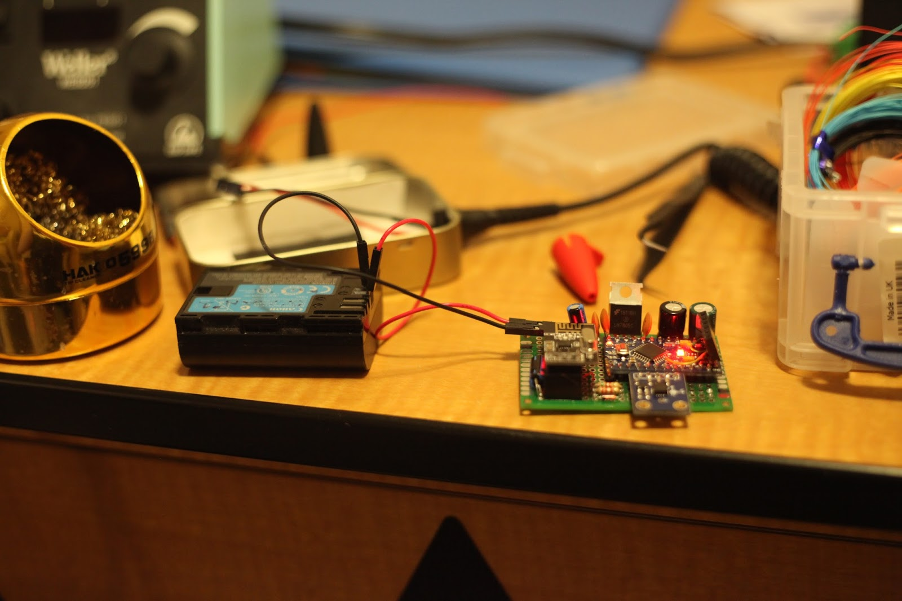

{kind=link}
I built an inexpensive, PC based, wireless telemetry system using COSMOS and Arduino. This system measures 3-axis accelerations of a race car allowing engineers to verify and tune the suspension design.
- If you're looking for a more indepth tutorial for this project, it's coming -
Download
Why?
Data acquisition is an integral part of the engineering process. Automated data collection, processing, and presentation will streamline design iteration and reveal previously undetectable issues. Simply watching your design function correctly isn't an indication that it's functioning efficiently.
The problem with telemetry is it's difficult to build and expensive to buy. Professional solutions like LabView and associated DAQ (data acquisition) hardware cost thousands of dollars. Open source hardware like Arduino and its large community make data collection easy, but doesn't solve the data presentation.
An incredibly inexpensive, dynamic, and expandable telemetry system can be built using Arduino and COSMOS.
| Cosmos Interface |
{kind=link}
- $5 Arduino clone
- $10 amplified nRF24L01 module pair
- $5 misc electronics
- $0 monies for software
What is COSMOS?
Cosmos is a FREE, open-source, real-time, data logging and command sending software developed by Ball Aerospace. If you have any intention or desire to display data from or control an embedded system, USE COSMOS! Seriously this program is 'the shit'.The Shit (noun)
"The best. This word is very interesting. The important part of it is without THE, an entirely different meaning applies. My teacher is shit = bad teacher. My teacher is THE shit = greatest teacher"
-Urban DictionaryMy only COSMOS complaint is it's not very intuitive. But like most powerful tools, once learned you will save alot of time and money.
| -hyperboleandahalf |
{kind=link}
No?
You didn't ask?
I was working on the set of BattleBots Season 2,
busy harassing team Chomp,
{kind=link}
| 2/5th team Chomp lookin sour |
{kind=link}
That's it.
| Chomp's COSMOS setup |
{kind=link}
Implementation
How hard could it be????
HAHAHAhahaha

Electronics
Before any electronics were built, I "learned" COSMOS by talking to an Arduino sending fake serial data. It took me days of frustration, deteriorating moral, and wallowing in pity. For example COSMOS would show but not connect to my Arduino. Turns out there's a bug where devices assigned to COM port 10 and higher won't connect... I found the bug.
One step at a time buddy.
Acceleration data is the design requirement, but since this telemetry system is expandable I included hardware to measure the race car battery voltage.
The main circuit board was built. It housed:
- Arduino Pro Mini
- 3-axis accelerometer
- nRF24L01 module
- lead solder
- supporting components
| Arduino, sensors, and 2.4 GHz transceiver |
{kind=link}
| "Kynar wire" for clean circuits |
{kind=link}
| :| |
{kind=link}
| 5v switching power supply |
{kind=link}
Here's a scope reading of the 12v rail while turning the master switch:
| 12v master switch throw |
{kind=link}
|  |
| Improvised test power source. |
{kind=link}
| /r/HailCorporate |
{kind=link}
| The prison cigarettes of early 2000's middle schoolers |
{kind=link}
| Altoids telemetry |
{kind=link}
| Telemetry USB adapter |
{kind=link}
| Left: Race Car Main Board, Center: Race Car Transceiver, Right: USB adapter and Transceiver |
{kind=link}
COSMOS
I can't say COSMOS hasn't been documented, because it has, but everything is a first world struggle when you're new.COSMOS Documentation
Creating and modifying a project is done through configuration files. Like you literally create a text file and type things into it. I'm pretty sure the documentation is only a cheat-sheet for somebody who already knows their way around.
Three configuration files are needed for a basic project. They specify:
- what type of connection you're making with COSMOS
- what data is coming in
- what data is going out
TELEMETRY car_tel accelerometer LITTLE_ENDIAN
APPEND_ITEM length 8 UINT "Packet size so COSMOS can read the serial port."
APPEND_ID_ITEM pktid 8 UINT 1 "Packet id so COSMOS can identify the packet and store it."
APPEND_ITEM sample_rate 8 UINT "samples per second"
APPEND_ITEM x_acceleration 32 FLOAT "x_axis accel in G's."
APPEND_ITEM y_acceleration 32 FLOAT "y_axis accel in G's."
APPEND_ITEM z_acceleration 32 FLOAT "z_axis accel in G's."
Ouch...
{kind=link}
The worst part is these configuration files are hidden 4 folders deep in the project file. I acknowledge COSMOS is a free software, but a graphical interface for generating the configuration files would be very nice.
Once these basic configuration files are completed, COSMOS can connect to the Arduino and data can be acquired. There are several built-in tools to display this data and send commands:
Packet Viewer - Show the contents of the current packet received, and associated data.
Command Sender - Allows the user to send commands and associated data.
| COSMOS Tools |
{kind=link}
Telemetry Grapher - Create custom graphs which update in real time. Automatically saves data logs for future reference.
| Telemetry Grapher |
{kind=link}
These default tools work well for initial testing, but still don't offer the convenience of a custom screen. To create a custom screen you need... another configuration file!
| Configuration Configuration Configuration Configuration |
{kind=link}
Below you can see my custom acceleration data screen and the configuration file used to generate it.
| Custom Screen creation |
{kind=link}
When the end user is running this telemetry system, they may be overwhelmed with the number of "island windows" COSMOS opens. In reality they'll spend 90% of their time in the custom window and telemetry grapher.
| Functional user interface |
Firmware
Sending data from the Arduino to COSMOS is relatively simple. A C Structure is created containing all the data we want to send. Multiple structures with unique ID's can be created for more organization and reduced bandwidth. These structs are sent one byte at a time to the computer.
Receiving commands from COSMOS is a little more challenging. I created two types of commands: settings and executes. 'Settings' changes a value in memory such as 'sample rate' while 'executes' run functions like accelerometer calibration. I then defined a list of commands and settings with unique ID's.
struct car_tel_t { uint8_t length; uint8_t id; uint8_t sample_rate; //samples per second uint16_t sample_time; float x_acceleration; float y_acceleration; float z_acceleration; float battery_voltage = 0.0; uint8_t test; };
//Command ID List #define INCOMING_ID_SETTING 0x00 #define INCOMING_ID_EXECUTE 0x01 //COSMOS Command list #define CMD_NONE 0x00 #define CMD_TEST 0x01 #define CMD_SEND 0x02 #define CMD_STOP 0x03 #define CMD_ACCELEROMETER_NEUTRAL 0x04 #define CMD_ACCELEROMETER_CALIBRATE 0x05
BUTTON 'Calibrate' 'cmd("CAR_TEL SEND_CMD with EXECUTE 0x05")'
| Calibration Button |
{kind=link}
One of the functions accessible through COSMOS is accelerometer calibration. Why find and hard-code the calibration values when we have a microprocessor to do it for us?
| Accelerometer GY-61 |
{kind=link}
Video Overview in High Definition!!
The End
That's it. For now at least.
Hi! 'm an italian computer science engineer that works as a freelance consultant engineer and also as a computer science teacher in an italian high school.
ReplyDeleteI found on YouTube your Telemetry project for RC car: it's fantastic! I'd like to construct with my students a similar blck box. Could you help us in this project? Are you interested?
Thank you very much, Best Regards
Paolo
Hi I have spent days looking around for this kind of information and your youtube video popped up so thankyou!
ReplyDeleteMy original plan was to have the arduino set up as a web server kicking out raw data as I have another program that I want to be able to read the data in real time. it can read xml, csv or JSON. Do you know if COSMOS can handle multiple inputs at the same time (several arduino boards) and output these any of those filetypes in realtime?
Thanks again.
Thanks, this looks awesome! I think I'll try this on my home solar system and then get it going with some LoRa(RFM95) radios for Power Wheels Racing Series(PRS and my PRS-RC).
ReplyDeleteBTW, I built a PCB in KiCAD to put a ProMini and an RFM95W radio together for LoRaWAN use as a sensor node. It might be of interest to you. It's currently all 3.3V but I'm considering adding a level shifter in some free space on the board and adding more I2C header connectors. 10 boards are ~$14 so pretty cheap:
http://dirtypcbs.com/store/designer/details/13122/1115/promini-node-v1-0-50x50-zip
Thanks again.
Hey William,
ReplyDeleteThis projected inspired my arduino accelerometer for our Baja SAE team this year, but I used custom processing code and Xbees (2 of your entire system costs less than one fucking xbee lol), but the range offered by the Xbee was needed for our car bc we test over pretty long areas. Anyways, thanks for doing this blog post, it really helped both with suspension and CVT tuning this year. If you're ever in LA, go by UCLA boelter hall!
Hi William,
ReplyDeleteWe are students from Spain (University of Zaragoza) and we are interested in develop a cheap arduino based telemetry system for several projects (Such as Rockets, a cubesat, motorbikes, robots... eve 3d printers). We would be glad if you could give us some additional info about your project.
Thanks!